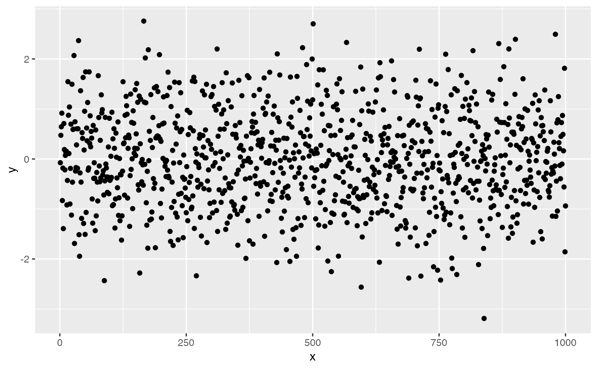
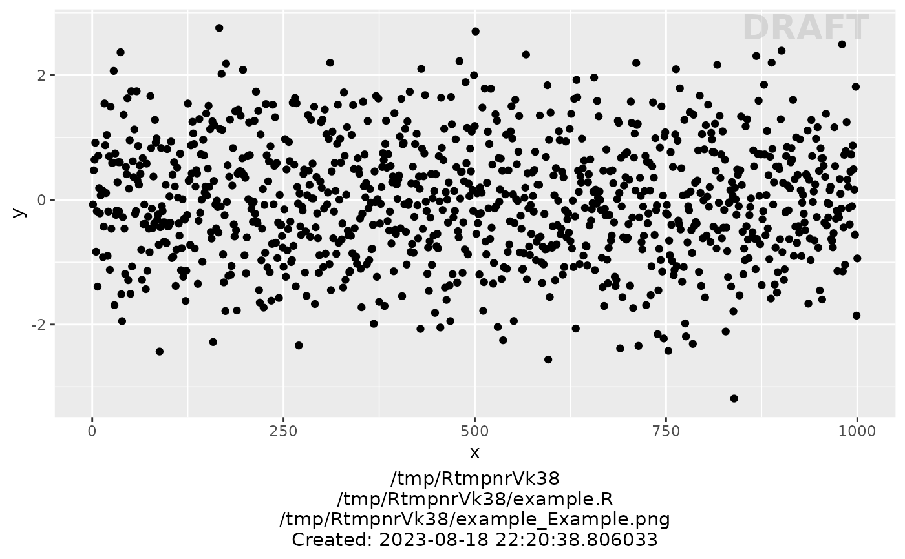

R/xgx_save.R
xgx_save.RdSaving plot, automatically annotating the status and denoting the filenames
xgx_save(
width,
height,
dirs = NULL,
filename_main = NULL,
status = "DRAFT",
g = ggplot2::last_plot(),
filetype = "png",
status_x = Inf,
status_y = Inf,
status_fontsize = 7,
status_fontcolor = "grey",
filenames_fontsize = 11,
filenames_fontcolor = "black"
)width of plot
height of plot
list of directories. If NULL or if directories missing, there is default behavior below
parent_dir = Parent directory containing the Rscript and the Results folder, default getwd()
rscript_dir = Subdirectory of parent_dir that contains the Rscript used to generate the figure, default "./"
rscript_name= Name of the Rscript used to generate the figure, default "Name_Of_Script_Here.R"
results_dir = Subdirectory ofparent_dir where the figure is stored, default "./"
filename_prefix = prefix of filename to be appended to filename_main
main part of the filename, excluding prefix and suffix. no default
status to be annotated
ggplot plot object, default is ggplot::last_plot()
file extension (e.g. "pdf","csv" etc.)
x location of the status in plot
y location of the status in plot
font size for status in plot
font color for status in plot
font size for filenames info in plot
font color for filenames info in plot
ggplot2 plot object
directory = tempdir()
dirs <- list(parent_dir = directory,
rscript_dir = directory,
rscript_name = "example.R",
results_dir = directory,
filename_prefix = "example_")
data <- data.frame(x = 1:1000, y = stats::rnorm(1000))
ggplot2::ggplot(data = data, ggplot2::aes(x = x, y = y)) +
ggplot2::geom_point()

xgx_save(4, 4, dirs, "Example", "DRAFT")
